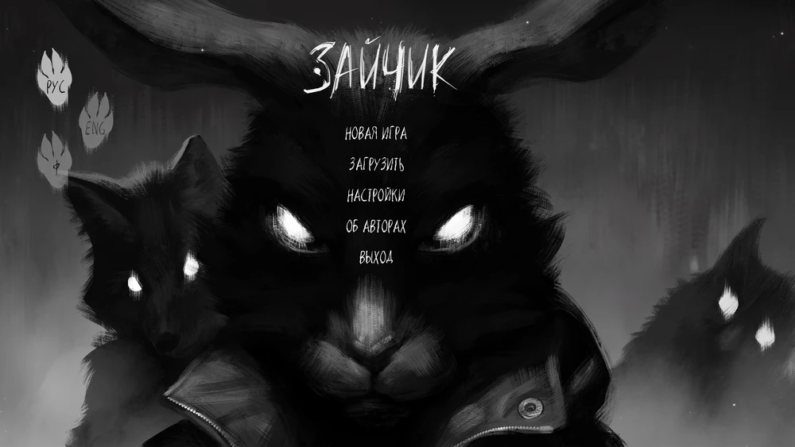

Всё засыпает с приходом зимы, но этот лес не спит. Что-то бродит по его заснеженным тропинкам, следит из-за чёрных деревьев и забирает то, что ему причитается. Оно оставляет после себя лишь странные слухи о голосах, зовущих из чащи, о лицах, заглядывающих в окна, о странных следах на снегу... и фотографии детей на объявлениях о пропаже.
Тому, кто услышал голос леса, уже не поможет ничего. Ему остаётся лишь всё глубже погружаться в холодные объятья ужаса, чтобы там, в ледяной черноте, сделать последний выбор: остаться живым или остаться человеком.
«Зайчик» — визуальная новелла в жанре ужасов по мотивам одноимённого рассказа Дмитрия Мордаса. Действие истории происходит в тихом ничем не примечательном посёлке, окружённом со всех сторон лесом. Здесь вдруг начинают пропадать дети, и главный герой — недавно переехавший сюда шестиклассник — невольно оказывается свидетелем и участником кошмарных событий.
